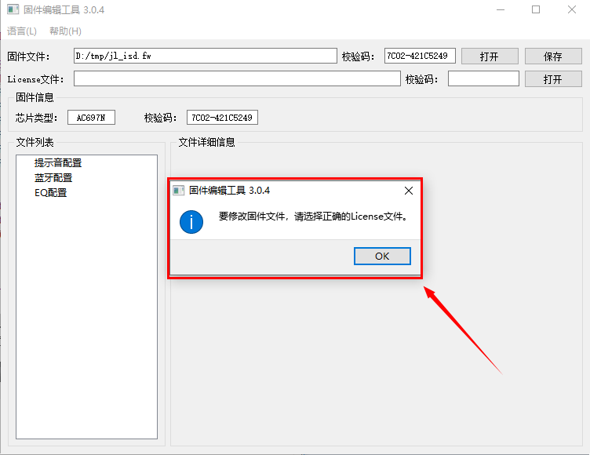
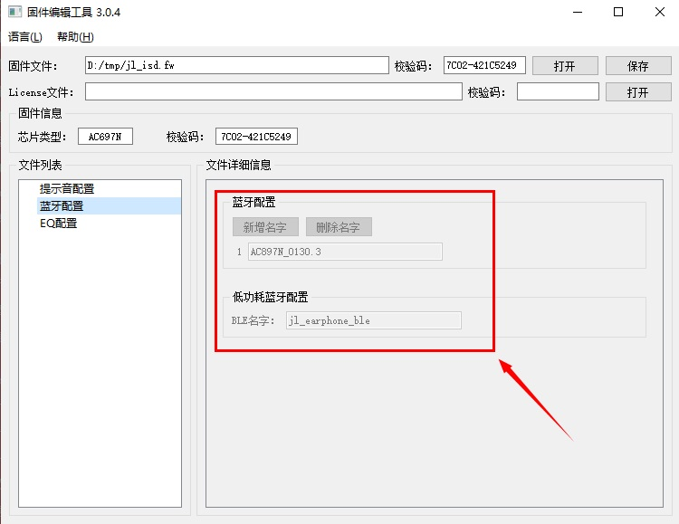
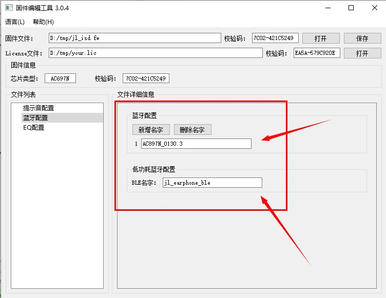
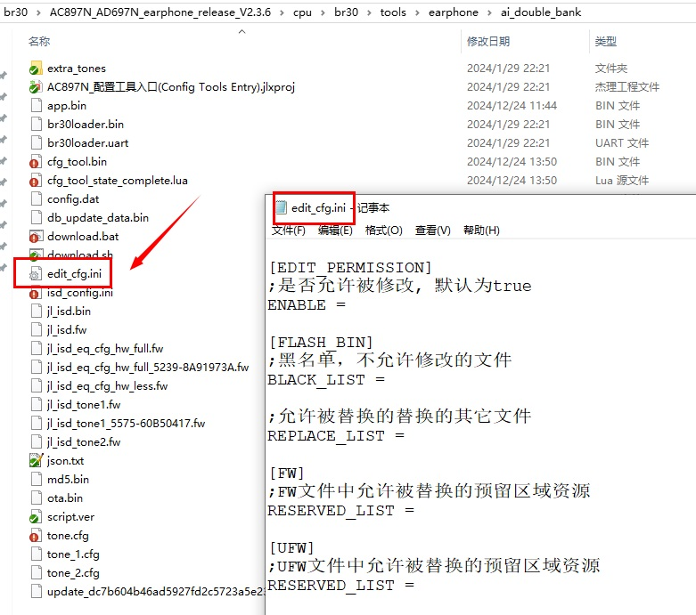
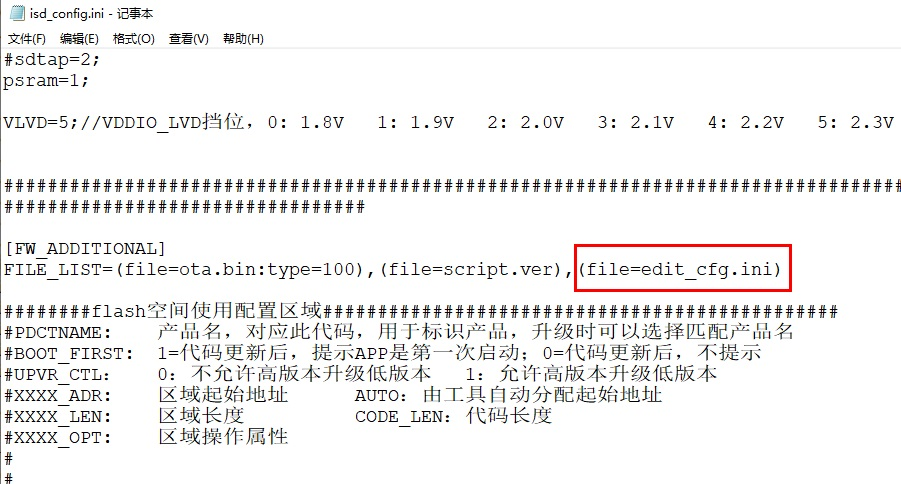
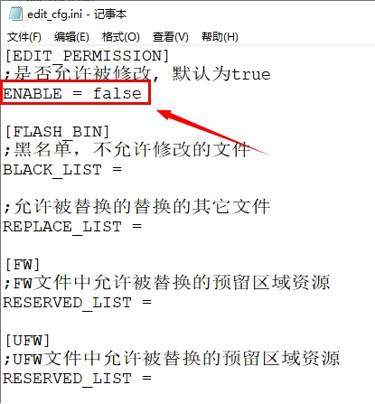
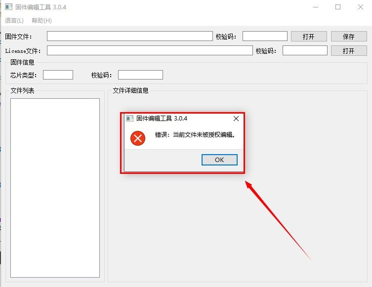

1.2.2. 权限说明
1.2.2.1. license文件
使用本工具修改固件， 需要使用license文件进行授权验证。
license文件是以lic后缀的文件：*.lic
当前选择了一个FW或者UFW文件后，工具会提示您选一个匹配的license文件。如下图：

如您是杰理一级代理商，请联系杰理深圳办获取license文件。
如果不是， 请联系您的代理上获取license文件。
如果没有选择licese文件， 工具不允许修改固件文件。
所有编辑框都会被设置为不可编辑状态。 如下图：

选择了正确的license文件后， 所有编辑框会变为可比编辑状态。如下图：

1.2.2.2. edit_cfg.ini文件
edit_cfg.ini文件是为了项目管理人员设置固件文件中哪些文件可以被修改，哪些文件不可以被修改而设计的。
edit_cfg.ini文件内容如下，可以直接复制到SDK中使用。
[EDIT_PERMISSION]
;是否允许被修改, 默认为true
ENABLE =
[FLASH_BIN]
;黑名单，不允许修改的文件
BLACK_LIST =
;允许被替换的替换的其它文件
REPLACE_LIST =
[FW]
;FW文件中允许被替换的预留区域资源
RESERVED_LIST =
[UFW]
;UFW文件中允许被替换的预留区域资源
RESERVED_LIST =
如下图：

需根据实际SDK目录结构放置edit_cfg.ini文件（可以参照isd_config.ini位置）。
1.2.2.3. 如何添加edit_cfg.ini文件到固件文件中
将edit_cfg.ini文件配置到isd_config.ini的FW_ADDITIONAL/FILE_LIST后，isd_download.exe生成固件文件时，会将它打包进固件文件。 如下图：

Note
如果
isd_config.ini中没有FW_ADDITIONAL/FILE_LIS配置段，可以直接添加。如果
isd_config.ini是由isd_config_rule.c生成，那么请修改isd_config_rule.c文件。
更多配置说明，请阅读后面的章节
1.2.2.4. 其它说明
工具目前支持原始的FW/UFW文件， 和无限制授权模式授权的FW/UFW。
工具加载license文件后，默认允许以下修改和替换行为
修改蓝牙名
替换提示音文件数据
替换EQ文件数据
如项目不允许任何修改， 请在edit_cfg.ini文件中设置EDIT_PERMISSION/ENABLE为false，如下图：

设置后重新生成的固件文件后，加载到工具时，会提示未被授权编辑，如下图：
